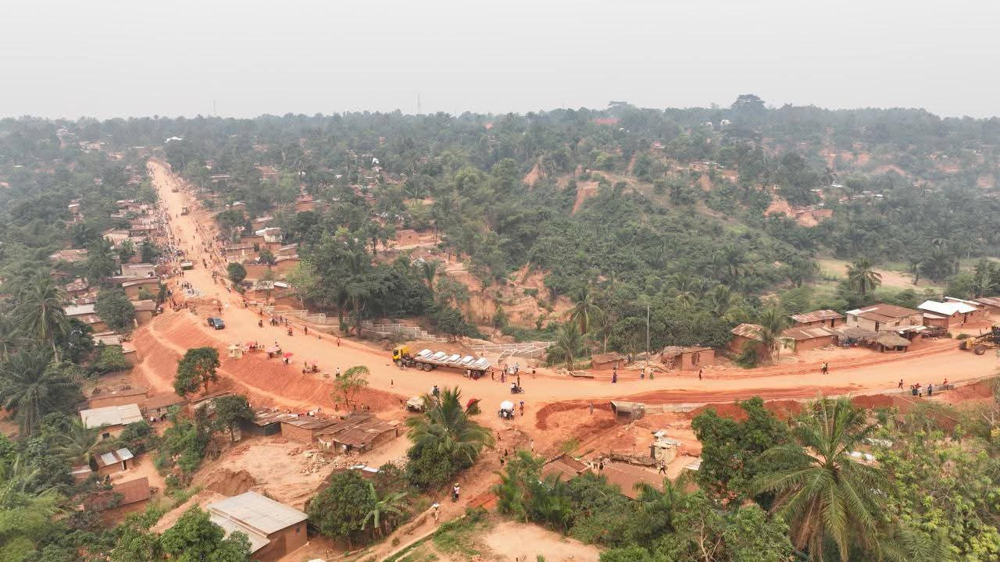
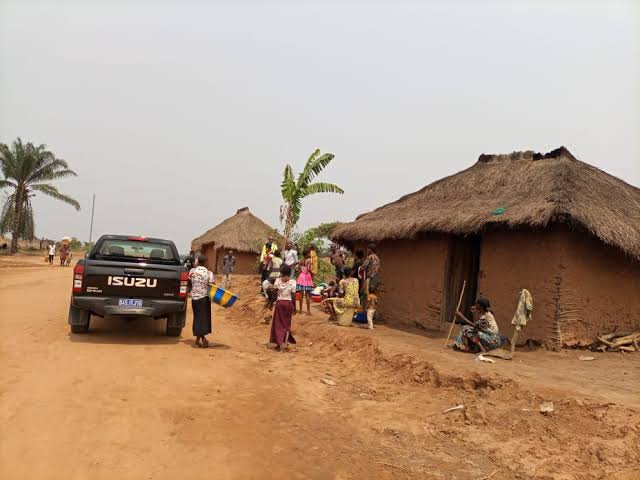
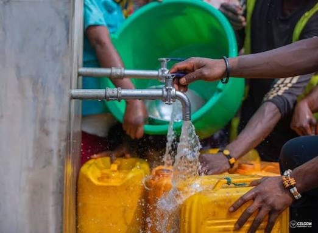
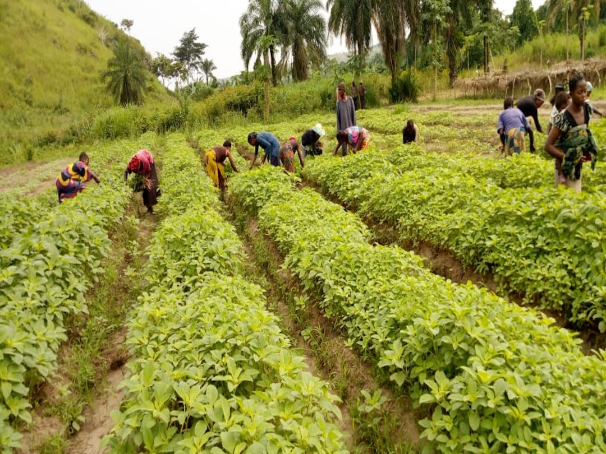
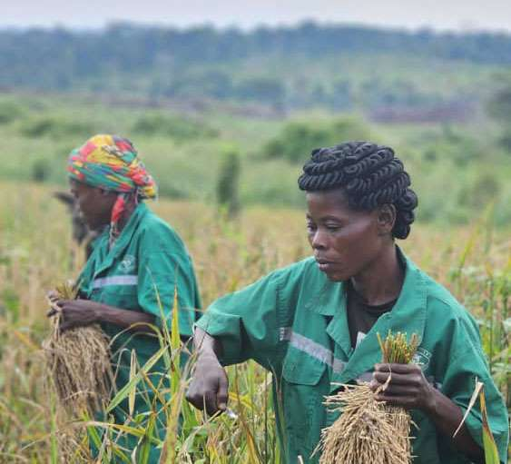
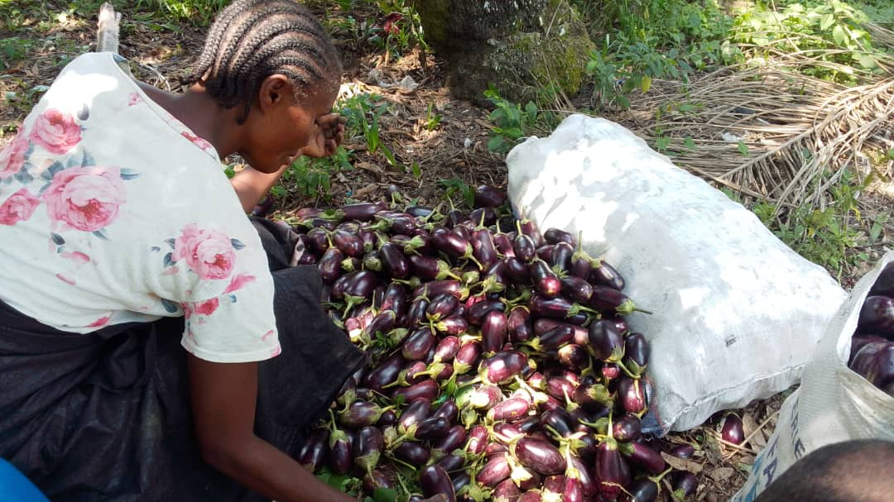

Cultiver l'espoir,
bâtir un avenir durable.
Centre de Réveil Missionnaire de Kamuesha & Le projet La Bonne Semence : œuvrer pour le développement durable des communautés de Kamuesha et d'au-delà.
Historique du projet

Le projet La Bonne Semence est le fruit d'une vision ambitieuse de développement durable portée par Tshibola Kapita Moïse. En s'articulant autour de la modernisation des pratiques agricoles, de l'agropastoralisme, de l'éducation, de la santé, de la protection de l'environnement et de l'essor économique, cette initiative vise à transformer durablement le quotidien des communautés de Kamuesha et d'au-delà.
En misant sur l'innovation, le renforcement des compétences agricoles et la formation des jeunes, le projet s'attaque aux racines des défis locaux pour bâtir un avenir d'autosuffisance et de prospérité partagée. C'est un véritable appel à co-créer un monde où les communautés locales et urbaines prospèrent dans la paix, l'harmonie et la dignité, grâce à l'engagement collectif et au soutien des partenaires techniques, financiers et sociaux.
Dates Clés de notre Parcours
- Foresterie
- Alimentation en eau potable
- Élevage
- Bâtiment et travaux publics
Début des recherches et élaboration du projet LA BONNE SEMENCE à Kamuesha. Participation de : Pedro Medo Alfredo et Tusamba Komba Dieuleveut.
Finalisation officielle du document du projet à Kinshasa.
Objectifs & Domaines

Le Centre de Réveil Missionnaire de Kamuesha s'affirme comme une association sans but lucratif confessionnelle profondément ancrée dans les réalités et les aspirations de sa communauté. Portant des valeurs de foi, de solidarité et d'engagement humanitaire, cette structure œuvre aux côtés des populations pour inspirer les consciences et impulser un changement positif.
En unissant la dimension spirituelle et l'action sociale concrète, elle offre un cadre d'écoute, d'entraide et de mobilisation, devenant ainsi un repère incontournable pour tisser des liens forts, cultiver la paix et porter des projets de développement porteurs d'espoir pour Kamuesha et d'au-delà.
Les Domaines d'Intervention
Impact du Projet

Amélioration durable des conditions de vie
L'amélioration durable des conditions de vie constitue l'aboutissement ultime de toutes ces actions menées au sein des communautés. Il ne s'agit pas seulement de répondre à des besoins immédiats, mais de bâtir des fondations solides pour que chaque famille puisse accéder à une stabilité pérenne.
Création d'emplois et Opportunités économiques
La création d'emplois et l'offre d'opportunités économiques pour les communautés viennent couronner cette vision de transformation et d'autosuffisance à Kamuesha.
Accès à l'eau potable
L'accès à l'eau potable et le développement des infrastructures hydrauliques représentent un impératif vital pour la santé, la dignité et le développement des communautés de Kamuesha et d'au-delà.
Protection de l'environnement
La protection de l'environnement et la gestion durable des ressources naturelles viennent ancrer toutes ces actions dans une démarche de responsabilité et de pérennité face aux défis écologiques actuels.
Partenaires & Cadre Légal

Nous lançons un appel vibrant aux partenaires financiers, techniques et sociaux afin d’unir nos forces et participer activement à la matérialisation de ce projet porteur d'avenir. Parce qu'aucun grand changement ne se fait seul, chaque contribution constitue une pierre angulaire pour bâtir un développement durable et inclusif.
Le Centre de Réveil Missionnaire de Kamuesha, Association sans but lucratif confessionnelle, est officiellement doté de la personnalité juridique par l'Arrêté ministériel N°406/CAB/ME/MIN/J&GS/2025 du 31 mars 2025.
Pourquoi nous rejoindre ?
- 🤝 Impact social : Améliorer durablement la vie des populations.
- 🌍 Développement durable : Investir dans un avenir responsable.
- 📊 Transparence : Gestion participative et responsable.
- 🏛️ Gouvernance inclusive : Collaboration avec toutes les parties prenantes.
Types de partenaires recherchés
Articles du Blog

Les nouvelles techniques agricoles au service des communautés
Au cœur des défis du développement rural, l'adoption de nouvelles techniques agricoles représente un levier d'émancipation et de prospérité incontournable pour les communautés locales. En introduisant des méthodes modernes, durables et adaptées aux réalités du terrain — telles que l'agroécologie, la gestion optimisée des ressources en eau et l'amélioration des semences —, il devient possible de transformer radicalement le quotidien des agriculteurs.
Formation des jeunes
Au-delà de la modernisation des pratiques des terres, la formation des jeunes constitue le pilier fondamental pour pérenniser le développement et l'avenir des communautés. Offrir à la jeunesse rurale et urbaine des opportunités d'apprentissage adaptées, c'est lui donner les moyens de devenir actrice de son propre destin.
Renforcement des compétences agricoles
Le renforcement des compétences agricoles vient parachever cette dynamique de transformation en transformant le savoir théorique en une véritable maîtrise de terrain, garantissant l'autonomie et la prospérité des producteurs de Kamuesha.
La Galerie



Le projet La Bonne Semence est né de la volonté de Tshibola Kapita Moïse de contribuer au développement durable des communautés de Kamuesha et d'ailleurs.
« Bâtir un monde où les communautés locales et urbaines prospèrent dans la paix et l'harmonie, grâce à un développement durable et équitable. »
« Contribuer au développement durable des communautés de Kamuesha et d'au-delà en promouvant l'agropastoralisme, l'éducation, la santé, la protection de l'environnement et l'essor économique. »